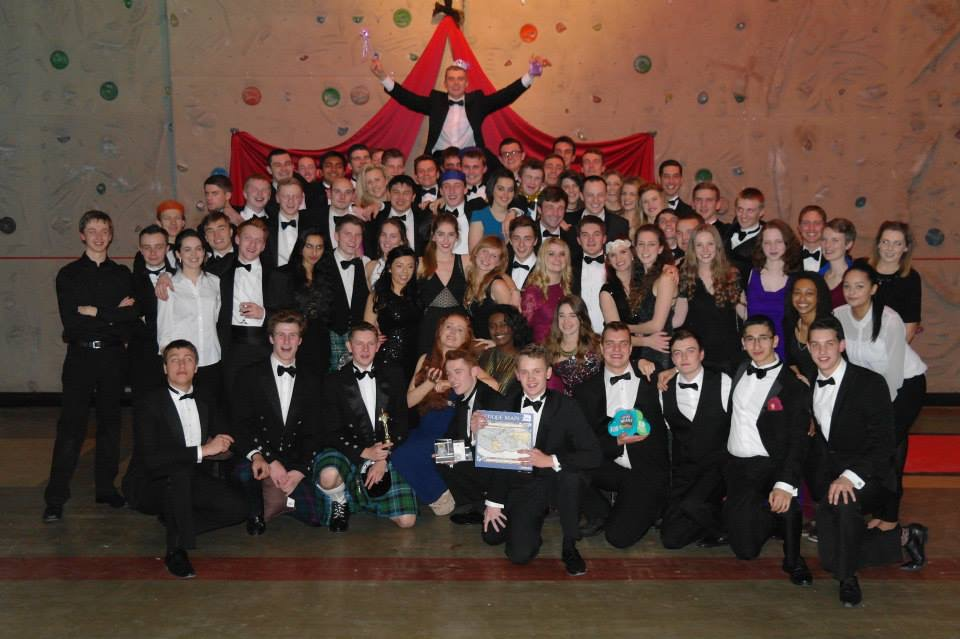
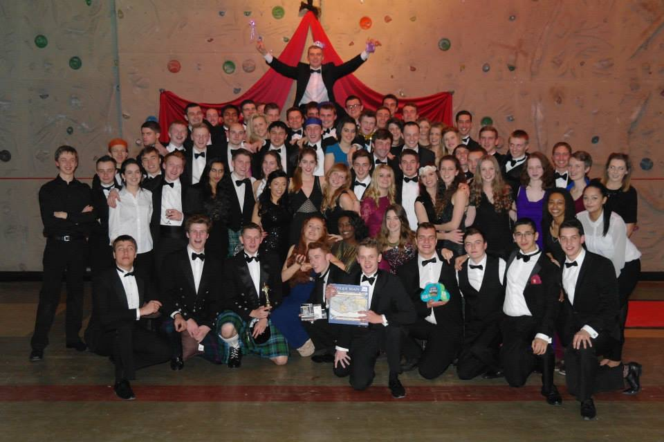

Clubs & Societies
- Law
- Investigation Society
- Dance
- Drama
- Radio
Sport & Fitness
- Football
- Basketball
- Baseball
- Lacrosse
- Swimming
- Gym
- Rugby
- Handball
- American Football
And many, many more
Campus
Edge Hill sits on a staggering 160 acre plot, with a diverse student population living and studying. Our award-winning campus conatins everything you need from top of the range industry facilities to stylish new accomodations, to social places for those nights with fellow students to the local on-site shop for the essentials. The campus to date has had a staggering £245m invested in it, updating and expanding facilities to industry standard to ensure you have the best possible chnace of employability. Furthermore, there has been a further £200m set for future improvements to the campus, making your time here at Edge Hill the best it can possibly be.
Students' Union
Edge Hill's Student Union strives to bring the best of university life to everybody, both on and off campus. Whether it's offering sports and fitness clubs, volunteering opportunites, a wide array of societies or regular (affordable!) nights out, you can be sure there's something for everybody.
All of this wouldn't be possible though without the help and tireless work of our dedicated students, who put their all into ensuring that you get everything you can out of your time here at Edge Hill. A Union President and three Vice Presidents, each representing the Universities 3 faculties, are elected each year by students, for students. If this doesn't sound like your thing, you can get involved in so many more ways, to find out more visit the Edge Hill Students' Union website.
Food, Drink & More ...
Edge Hill hosts many bars and social areas, for students who live both on and off campus or even commute from home, to socialise, relax and most of all meet new fellow students. The bars, clubs and The Hub™ are all within close proximity from each other located in the centre of the campus. Our on campus clubs feature a range of guest DJs, SKY TV, pool tables, pub quizes and much more for you and your friends. Furthermore, Edge Hill is close to all the public transport links making it easier to travel to local Liverpool, Manchester or further for the nights to remeber.
For more on the transport links round the UK please visit our transport page by clicking HERE.
The Hub™
The Hub™ gives you the choice to study, relax or socialise before, between and after lectures with free WiFi connection. There is also the choice of cold and hot food or just a snack at our campus food stations. Also, stalls are put up within The Hub™ from outside businesses giving you the options from homemade cakes to internship promotions.